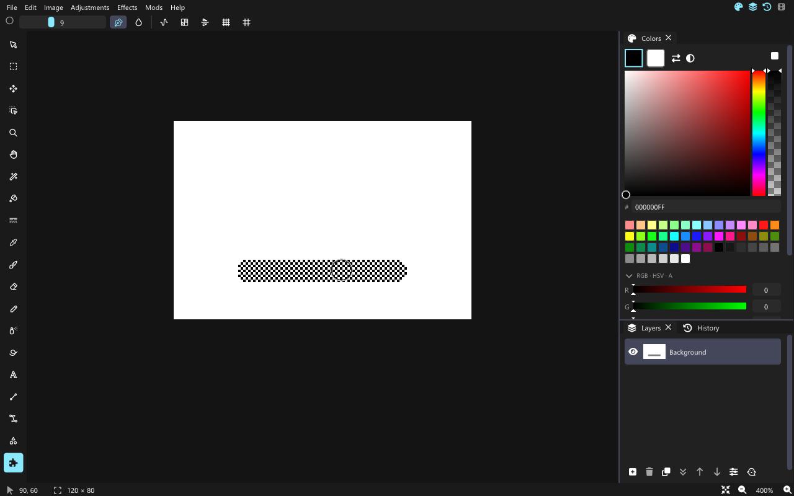

Tutorial: Checker Brush (ferramenta Lua)
Uma ferramenta de pintura que pinta só um pixel sim, outro não, em xadrez. O mod pronto está em mods/examples/checker-brush.
Como as ferramentas são construídas
Uma ferramenta do David tem três partes: o controlador (como a entrada do ponteiro vira posições: à mão livre aqui), o formato da ponta (o pincel redondo, dimensionado pela largura do pincel na barra de ferramentas) e a tinta (no que um pixel coberto se transforma). Uma ferramenta Lua mantém o controlador e o formato da ponta do Pincel e fornece a própria tinta.
O código
mod.json é igual ao do tutorial de comando, com "entry": "main.lua". Depois:
david.tool{
id = "checker-brush",
name = "Checker Brush",
ink = function(x, y, before, color)
if (x + y) % 2 == 0 then
return color
end
-- returning nothing leaves the pixel as it was
end,
}ink(x, y, before, color) recebe a posição do pixel, sua cor antes do traço e a cor atual (primária para o botão esquerdo, secundária para o direito). Ela retorna a nova cor, ou nada para deixar o pixel como está. O David mistura seu resultado conforme a cobertura do pincel, então as bordas suavizadas continuam suaves, e cada pixel é calculado uma vez por traço a partir do valor before, então passar de novo por ele no mesmo traço não acumula.
Reinicie o David: a ferramenta aparece no fim da barra de ferramentas com um ícone de peça de quebra-cabeça. Adicione key = "Q" para dar a ela um atalho de uma letra.

Ideias
- Sombreamento: retorne uma versão mais clara ou mais escura de
before. - Padrões: use
x % 4ey % 4para carimbar uma textura. - Simetria e modo ladrilhado também funcionam com ferramentas de mods: eles acontecem antes de a tinta ser chamada.